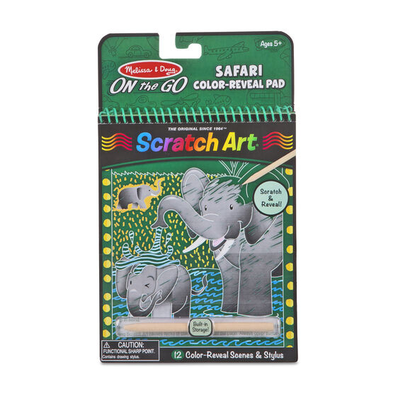
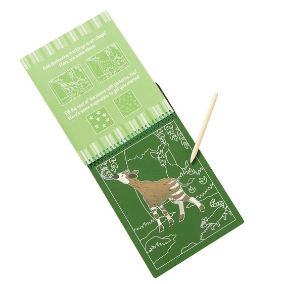

Available
Scratch Art Color Reveal Pad - Safari
Arts and Crafts
R150Scratch Art products feature bright colors and patterns hidden beneath a matte coating, plus a wooden stylus to reveal them with a simple scratch Includes 12-page spiral-bound color-reveal Scratch Art pad featuring adorable safari animals Fun facts and pattern ideas included for every page Wooden stylus snaps into pad for portable, convenient, on-the-go fun and creativity
Enquire about this product
Scratch Art Color Reveal Pad - Safari at Kids Corner KZN
Scratch Art Color Reveal Pad - Safari is part of our Arts and Crafts collection. Kids Corner KZN stocks toys for learning, pretend play, creative play, gifting and everyday childhood discovery in South Africa.
Browse more Arts and Crafts toys